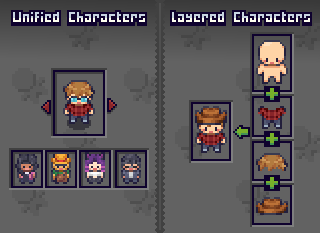

Basic Concepts
This page introduces the main features of the Character Management System:
- Types of Characters – The two fundamental different kinds of characters.
- Character Type Assets – The core of every character.
- The Character Shader – How characters are rendered in-game.
- Character Templates – Blueprints for creating characters later.
- Character Usage – Scripts to load and render characters.
- Built-in Modular Characters - Modular characters pre-setup and ready for use.
- Character Grouping System - Groups used to save and manage characters.
- Character Creator – Modular UI framework for building customizable characters in-game.
Types of Characters

The Character Management System contains two types of characters for different use cases.
Unified Characters
A Unified Character uses a single spritesheet containing the full character with all animations and frames.
Unified Characters are easy to setup and use but lack runtime customization since the character is pre-created in one spritesheet.
Layered Characters
A Layered Character combines multiple spritesheets into one at runtime to create the final character.
Every spritesheet must be the same size and contain the same frame sizes and positioning to work properly.
Each spritesheet is layered on top of another in order at runtime.
For example: If we had a character with four layers: Body, Outfit, Hairstyle and Accessory.
When the character is used, the body layer will be renderered first, then the outfit on top of that, then the hairstyle and finally the accessory layer.
You have full control over the order the layers are rendered in.

Character Type Assets
Every character is defined by a Character Type asset, which is a Scriptable Object
A Character Type:
- Defines if a character is Unified or Layered
- Stores the Base Spritesheet
- References a single shared Animator Controller for all characters to use (Optional)
Base Spritesheet
The Base Spritesheet defines the layout that all other spritesheets must follow.
This spritesheet is sliced into multiple frames, these are the frames that are used for any character using the same Character Type asset.
The Character Shader
A shader is used to visually display a character over the Base Spritesheet.
Sprites from the Base Spritesheet are used directly in a renderer component (such as a Sprite Renderer) or used in an Animator Controller.
If a Unified Character is used, the shader takes the single spritesheet of the character and renders that over the Base Spritesheet.
If a Layered Character is used, the shader combines all layers into the final rendered character.
The renderer component is only ever using sprites from the Base Spritesheet meaning all other spritesheet do NOT need to be sliced, they should instead have a Sprite Mode of Single.
This approach saves a ton of time by avoiding the headache of slicing spritesheets and setting up Animator Controllers for every character.
Note
If a Character Renderer component is used the shader will be applied automatically.
Character Templates
A Character Template is a Scriptable Object that acts as a blueprint for creating characters later at runtime. Templates are supported for both Unified and Layered Characters.
Templates allow you to create a character once and resue it anywhere it in your project just by referencing it.
Additionally templates provide extra functionality for Layered Characters allowing you to randomize specific layers based on pre-set rules you define in the editor.
Read More → Character Templates
Character Usage
Character Renderer Components
Character Renderer components are responsible for loading and showing a character in-game.
Renderer components handle:
- Creating/loading a character
- Applying the Character Shader
- Assigning the Animator Controller if applicable
- Managing Overlay Layers
| Renderer Component | Purpose |
|---|---|
| Layered Character Template Renderer | Create and show a Layered Character from a template. |
| Unified Character Template Renderer | Create and show a Unified Character from a template. |
| Random Layered Character Renderer | Create and show a new Layered Character with completely random layer options. |
| Layered Character Group Entry Renderer | Load and render a saved Layered Character from a group. |
Built-in Characters
The BlazerTech Character Management System includes fully configured modular characters which can be used in any commercial or non-commercial project.
The BlazerTech Modular Characters consist of four layers:
- Body
- Outfit
- Hairstyle
- Accessory
Included:
- Layered Character Type
- Unified Character Type
- A few Layered and Unified sample templates
These characters will also be purchasable separately upon the full release of the Character Management System
Read More → Built-In Characters
Character Grouping System
Charcter groups are used to sort characters. They're great for organizing characters into meaningful collections, whether that's for a dynamic roster or a fixed group size.
Read More → Character Grouping System
Two types of groups exist.
Flexible Group Type
A dynamic list that characters can be added to, removed from, or edited at anytime.
Example Uses:
- A roster of playable characters the player can create, edit, and delete.
- A collection of background NPCs that will later be randomly selected from.
Read More → Flexible Group Type
Fixed Group Type
An immutable list of characters. When the list is created all characters are created immedietely. Characters can then be edited but not removed and new characters cannot be added.
Example Uses:
- A predined set of characters the player can choose to play as.
- A set of main characters the player can customize.
Character Creator
The Character Creator is a prefab based Character Creation Menu Framework.
Prefabs can be combined and customized to create whatever design you want.
It makes the process of building a Character Creation Menu into your game easy.
Tip
The Character Creator only works with Layered Characters. Unified Characters do not support runtime customization.
Example Use Cases
- Customizable Player Character – Easily setup the menu for a single character such as the player character.
- Editing Character Lists – Allow players to edit a predefined roster, or manage a dynamic list (create, edit, delete).
Key Features
| Feature | Description |
|---|---|
| Layer Selectors | Dropdowns, carousels, tabs, etc. |
| Character Preview | Static or animated, with options to rotate or swap animations. |
| History Tracking | Every change is logged and can be shown as text or image snapshots. |
| Randomization | Randomize the entire character or specific layers. |
| Loading Screens | Customizable loading screens which hide the menu until it's ready. |
| Character Naming | Optional name field. |